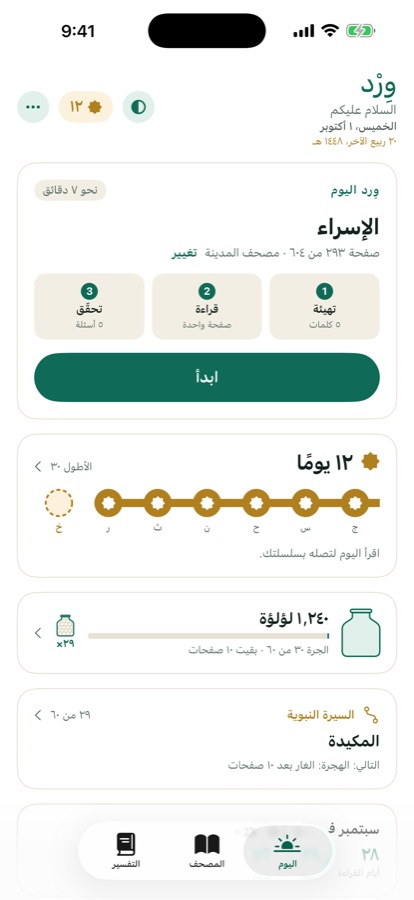

١. اليوم
من هنا يبدأ كل شيء. تُظهر البطاقة العليا وِرد اليوم: السورة والصفحة والخطوات الثلاث.
- اضغط ابدأ. وإن توقفت في منتصف الوِرد ظهر تابع · صفحة كذا، فتكمل من حيث توقفت.
- وتحتها: سلسلة أيامك، وجرّة اللآلئ، ورحلتك، ونظرة إلى الشهر.
- وفي الأعلى: المظهر (فاتح أو داكن)، ورصيد اللآلئ، وزر ⋯ للإعدادات.